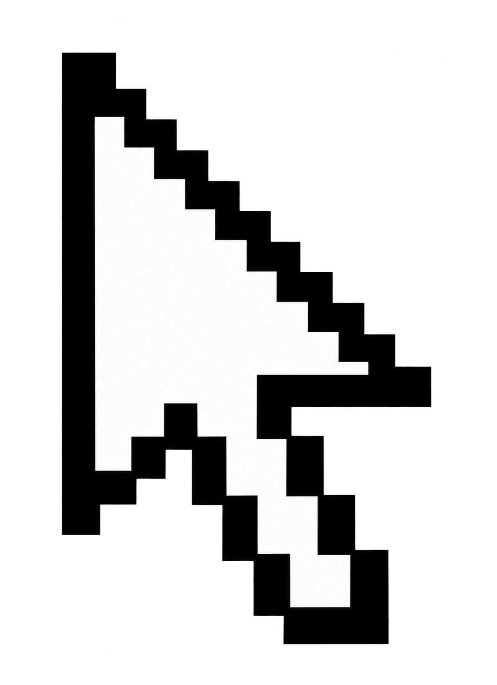
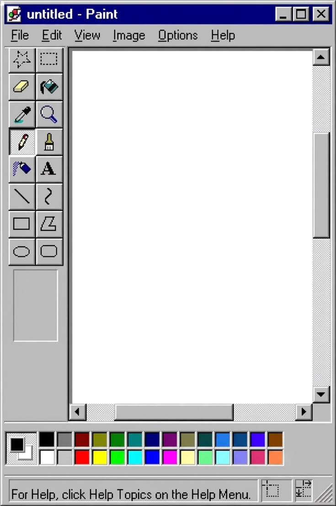
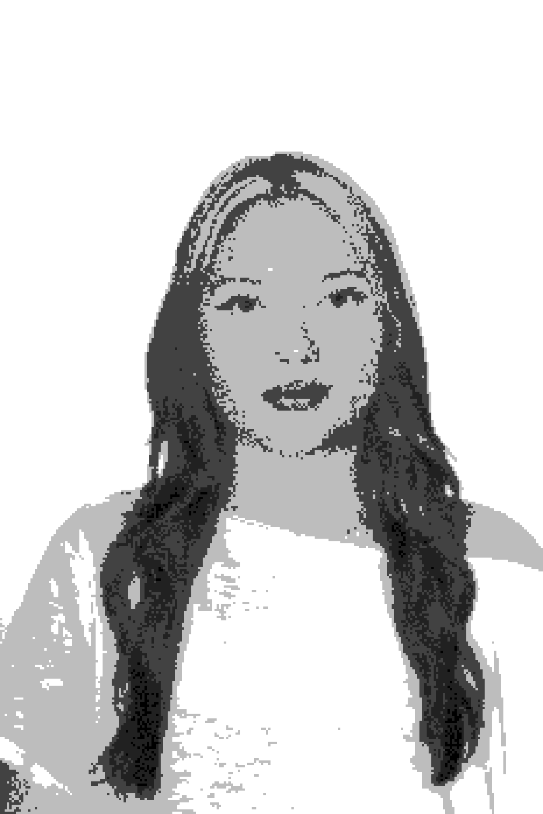
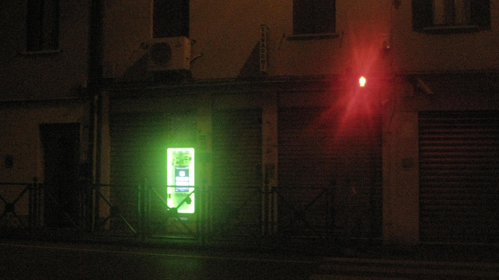
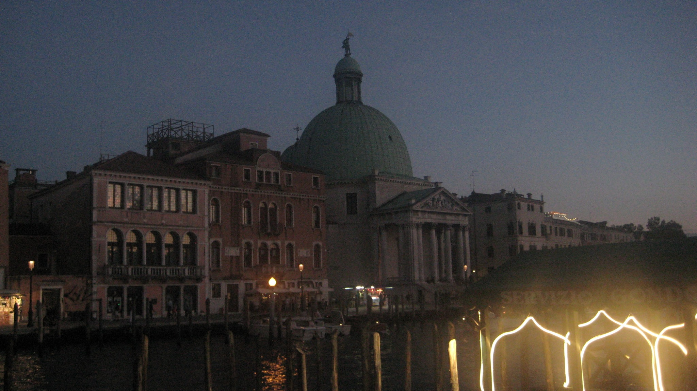

RAVEN.EXE // PERSONAL DESKTOP
ONLINE
DIGITAL PORTFOLIO / 2026
A LOT GOING
ON
IN
MY HEAD
.
Curious by nature, drawn to the unconventional. Inspired by music, culture, and the little things most people overlook. Always exploring, collecting ideas, and finding unexpected ways to make things my own.



WELCOME, YOU FOUND ME.
Hi, I'm Raven.
I’m a visual thinker interested in digital and hands on design, as well as brand identity I like finding a clear concept in the details and turning it into something with character.
GET TO KNOW ME ↗FILE 001 / INTRODUCTION
THE PERSON
BEHIND THE SCREEN
.
I’m Raven, a Vancouver-based designer interested in typography, image-making and visual identity. I collect references from everyday life and use them to build concepts with a distinct point of view.
THE IDEA BEHIND THE SITE
The site is inspired by early 2000s computer desktops, with pixel details, folders and pop up windows. I chose this theme because it feels playful and nostalgic, while also working as a metaphor for my mind: full of different interests, images and ideas. I wanted my personal brand to feel like an interactive space people could explore, rather than a traditional portfolio.
A bit about my process
I love both digital art and making things by hand. Moving between the two has shaped how I think about design, materials and visual ideas.
FILE 002 / SOUND & CULTURE
A LITTLE
SIDE TRACK
.
Music is one part of my world. I like finding tracks that attach themselves to a place, a night or a particular feeling. This one has been on repeat lately.
Press play above.
My ideal night
A good atmosphere, interesting people, a place with character, and learning something new along the way.
FILE 003 / ART & INSPIRATION
COLLECTED,
NOT CURATED
.


Textures, type, architecture, packaging and everyday scenes. I save what catches my eye and look for connections between them.
FILE TYPE INSPIRATIONFILE 004 / PERSONAL PHILOSOPHY
LOOK A
LITTLE CLOSER
.
I’m happiest exploring, making things and noticing what is usually overlooked. Curiosity is where most of my ideas begin.